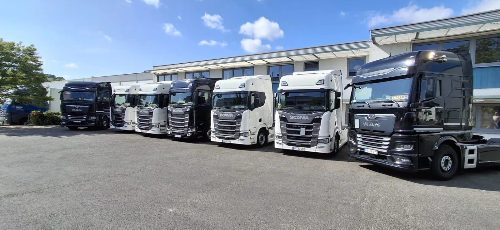
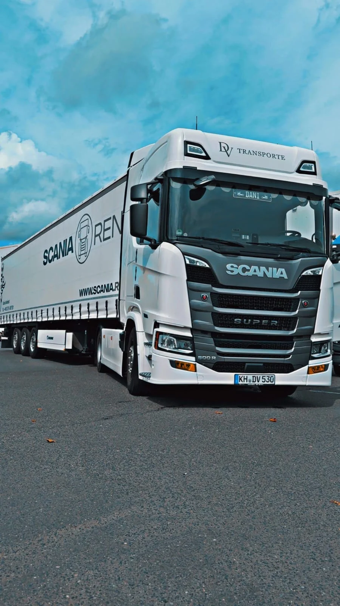
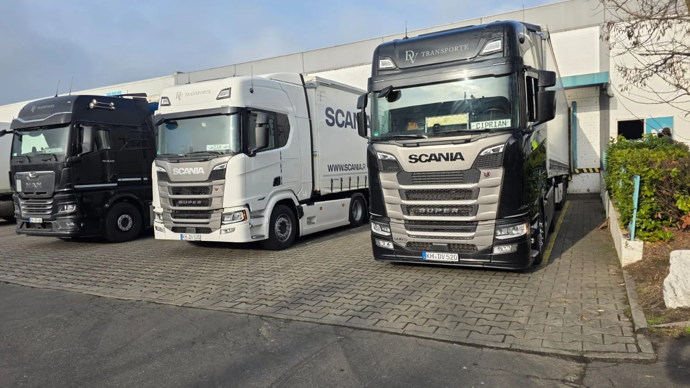
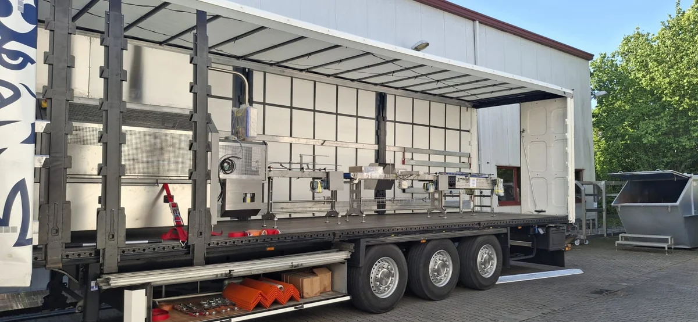
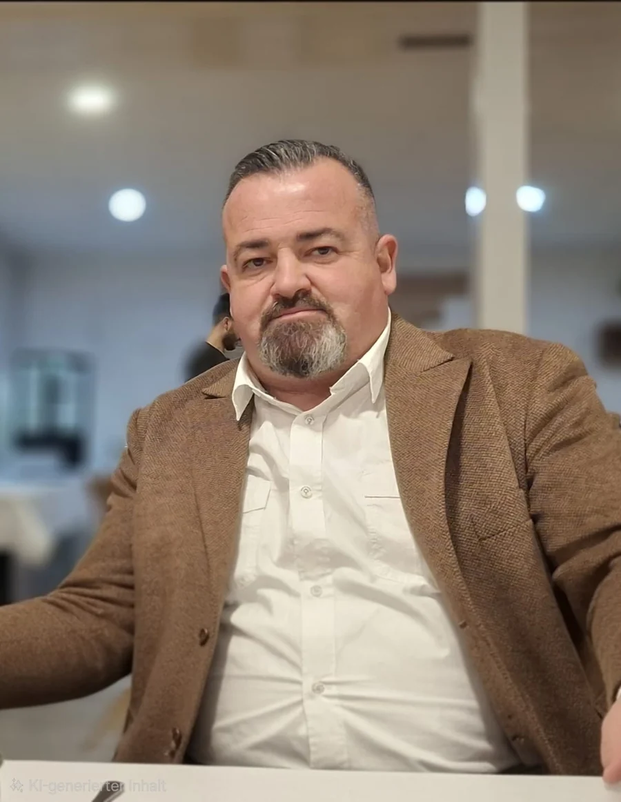

{kind=link}
Fuhrpark / Weinsheim
Gemeinsam startklar.
Unsere Fahrzeuge stehen bereit, wenn verlässliche Kapazität und direkte Abstimmung gefragt sind.
DV TRANSPORTE / EINBLICKEIhre Ladung. Unser Antrieb.
Internationale Verkehre,
regionale Umfuhren & flexible Kapazitäten.

Neuigkeiten aus dem Unternehmen.
Einblicke von unterwegs.
Für Speditionen und Unternehmen,
die verlässlich weiterkommen wollen.
Grenzüberschreitende Transporte für Import und Export. Wir organisieren internationale Verkehre zuverlässig und stimmen Abläufe, Termine und Kapazitäten passend zu Ihrer Ladung ab.
Leistung ansehenFlexible Transporte im regionalen Tageseinsatz. Ideal für kurzfristige Umfuhren, Werksverkehre und planbare Transporte mit kurzen Wegen und direkter Abstimmung.
Leistung ansehenZusätzliche Transportkapazitäten, wenn sie gebraucht werden. Wir unterstützen Speditionen und Unternehmen zuverlässig im Subunternehmereinsatz – flexibel, abgestimmt und einsatzbereit.
Leistung ansehen

Unser Fuhrpark wächst. Mit dem zehnten LKW bauen wir unsere Kapazitäten für Ihre Transportaufträge weiter aus.
Unser UnternehmenEin Fuhrpark, der mit Ihren
Anforderungen Schritt hält.

GEMEINSAMFuhrpark, Beladung und Ladungssicherung.
10 Bilder – kompakt in einer Galerie.

Daniel Vlasin / InhaberDenis Schäfer leitet die Disposition bei DV Transporte. Er koordiniert Transportanfragen, verfügbare Kapazitäten sowie Abhol- und Liefertermine und sorgt für eine klare Abstimmung im Ablauf Ihrer Tour.
Transport abstimmenDaniel Vlasin führt DV Transporte als Inhaber. Gemeinsam steht das Unternehmen für persönlich abgestimmte Transporte aus Weinsheim.
DV Transporte kennenlernenAbholort. Zielort. Ladung. Termin.
Wir klären den Rest persönlich mit Ihnen.
{kind=link}
{kind=link}
{kind=link}
{kind=link}
{kind=link}
{kind=link}
{kind=link}